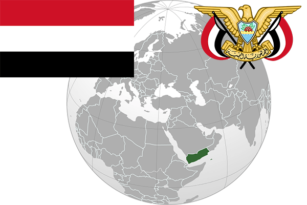

To`liq nomi: Yaman Respublikasi
Region: Janubi-g’arbiy Osiyo
Qonunchilik shakli: Respublika
Mustaqillik kuni: 22 may 1990-yil
Poytaxt: Sana
Maydoni: 527,970 km²
Chegaradosh davlatlari: Ummon, Saudiya Arabistoni
Aholisi: 25 408 288
Aholi zichligi: 44 /км²
Aholining o`rtacha yoshi: 64,05 yil
Rasmiy tili: Arab tili
Dini: Xristian
Pul birligi: Yaman riali
Telefon prefiksi: +967
Internet domen: .ye
Xalqaro tashkilotlarga a`zoligi: BMT
Dengiz va okeanlarga chiqishi: Hind okeani
YIM: Butun: $37.3 mlrd.(2017-yil)
Yirik shaharlari: Sana